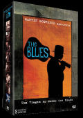

|

"The Blues" (2003 - 824m)
SINOPSE
Uma Viagem ao Mundo dos Blues
Com Martin Scorsese como mentor e produtor executivo, The Blues é uma série de filmes impressionistas, dirigidos por alguns realizadores de destaque do cinema mundial. Scorsese, Clint Eastwood, Mike Figgis, Charles Burnett, Marc Levin, Richard Pearce e Wim Wenders partilham a sua paixão pela música através das câmaras e captam a essência dos Blues - a sua ressonância emocional. Nesta deslumbrante viagem ao mundo dos Blues, para além da preciosidade do material de arquivo e das interpretações especialmente gravadas para cada filme, destaca-se a forma como cada realizador explora os Blues e a sua influência global, partindo das plantações de algodão do Mississipi, onde os escravos negros influenciados pelos ritmos africanos elegeram os Blues como a sua música, e estendendo-se por esse mundo fora influenciando tantas pessoas e toda a música contemporânea como o Rap, Hip-Hop, Rhythm & Blues, Soul, Country e Rock'n'Roll.
No dia 7 de Setembro de 2003, Martin Scorsese juntou vários músicos no Radio City Hall de Nova Iorque para um concerto memorável de celebração aos Blues. O filme do concerto, realizado por Antoine Fuqua, capta a emoção dessa noite mágica e presta um verdadeiro tributo aos Blues. É a oitava pérola deste colecção!
Os filmes incluem documentos raros de arquivo com actuações de Muddy Waters, Howlin' Wolf, Willie Dixon, John Lee Hooker, Bo Diddley, Eric Clapton entre outros, e ainda, cerca de 100 novas interpretações gravadas por músicos contemporâneos dos blues, incluindo B.B. King, Bonnie Raitt, Lou Reed, Tom Jones, Los Lobos, Jeff Beck e Lucinda Williams.
CONTÉM 8 FILMES:
DE REGRESSO A CASA
("Feel Like Going Home")
Em busca da origem dos Blues, o realizador Martin Scorsese viaja com o músico Corey Harris, desde as plantações de algodão do Mississipi até às margens do rio Níger, no Mali, em África.
Este documentário sobre as raízes dos Blues mostra-nos verdadeiras relíquias de arquivo bem como actuações de Corey Harris, Willie King, Taj Mahal, Keb'Mo', Otha Turner, Habib Koité, Salif Keita e Ali Fraka Toure.
Scorsese explica "Eu sempre senti uma afinidade pela música dos Blues - A cultura e as histórias narradas através da música fascinam-me e impressionam-me bastante. Os Blues têm uma ressonância emocional muito forte e são, sem dúvida, os criadores da música popular americana".
EXTRAS:
. Entrevista com o Realizador Martin Scorsese
. Filmografia do Realizador
. Trailer "The Blues"
. 6 actuações suplementares não incluídas no filme: Taj Mahal & Corey Harris: "Sitting On Top Of The World", Willie King & The Liberators: "Spoonful", Keb'Mo' & Corey Harris: "Sweet Home Chicago", Otha Turner & Corey Harris: Sitting On Top Of The World"
Salif Keita: "Honeysuckle"
A ALMA DE UM HOMEM ("Soul of a Man")
Em A Alma de Um Homem, o realizador Wim Wenders analisa a tensão dramática dos Blues, entre o sagrado e o profano, ao explorar a vida e música de três dos seus artistas favoritos dos Blues: Skip James, Blind Willie Johnson e J.B. Lenoir.
Com uma parte histórica e outra de peregrinação pessoal, o filme conta a história dessas vidas de música, através de uma extensa sequência de ficção, de um arquivo de imagens raras, de documentários actuais e da reprodução das suas músicas por artistas contemporâneos, tais como: Shemekia Copeland, Garland Jeffreys, Nick Cave, Los Lobos, Eagle-Eye Cherry, Vernon Reid, James Blood Ulmer, Lou Red, Bonnie Raitt, Marc Ribot, The Jon Spencer Blues Explosion, Lucinda Williams e T Bone Burnett.
Wenders explica: "Estas músicas tem um grande significado para mim. Eu sinto que há mais verdade em qualquer uma delas do que em qualquer livro que li sobre a América, ou em qualquer filme que tenha visto. Tentei descrever, mais como um poema do que como um documentário, aquilo que me marcou mais nas suas músicas e vozes"
EXTRAS:
. Entrevista com o Realizador Wim Wenders
. Comentários Áudio do Realizador Wim Wenders
. Filmografia do Realizador
. Trailer "The Blues"
. 5 actuações suplementares não incluídas no filme: Lou Reed: "See That My Grave Is Kept Clean", Cassandra Wilson: "Slow Down", Alvin Youngblood Hart: "Mama Talk To Your Daughter", Marc Ribot: "Dark Was The Night, Cold Was The Ground"
Chris Thomas King: "Revelations".
A CAMINHO DE MEMPHIS
"Road to Memphis"
O Realizador Richard Pearce traça a odisseia musical da grande lenda dos Blues, B.B. King, num filme que é um tributo à cidade onde nasceu um novo estilo de Blues. Pearce leva-nos também pela estrada aos bastidores dos Blues, com os veteranos de Memphis, Bobby Rush e Rosco Gordon. A homenagem de Pearce a Memphis apresenta actuações originais de B.B. King, Bobby Rush, Rosco Gordon, Ike Turner, Reverendo Gatemouth Moore e Little Milton, assim como inclui uma sequência de imagens de arquivo de Howlin' Wolf, B.B. King, Rufus Thomas, Little Richard, Fats Domino, The Coasters, entre outros.
Pearce explica: "Os Blues são a hipótese de celebrar uma das mais primitivas formas de arte americanas, antes que tudo desapareça absorvido, na sua totalidade, pela geração do Rock' n' Roll. Felizmente chegámos antes que fosse tarde demais."
EXTRAS:
. Entrevista com o Realizador Richard Pearce e Robert Kenner
. Filmografia do Realizador
. Trailer "The Blues"
. 4 actuações suplementares não incluídas no filme: B.B. King: "Key To The Highway", B.B. King: "Blues Boys Tune" (Instrumental), Robert Belfour: "Done Got Old", Humbert Sumlin & David Johansen: "Smokestack Lightning"
AQUECIDO PELO FOGO DO DIABO
"Warming by the Devil's Fire"
Charles Burnett explora o seu próprio passado como um jovem rapaz que se movimenta de um lado para o outro, entre Los Angeles e o Mississipi, balançando entre um tio que adora os Blues e uma mãe que considera os Blues a música do Diabo. O filme de Burnett faz uma audaciosa mistura de histórias imaginárias com imagens documentais de um anfitrião de lendas dos Blues, num conto sobre o reencontro de um jovem com a sua família no Mississipi, em 1955, dramatizando as tensões entre a tendência espiritual do gospel e as diabólicas lamentações dos Blues.
Burnett explica: "O som dos Blues foi uma parte do meu ambiente, que eu aceitei como verdadeiro. No entanto, com o passar dos anos, os Blues apareceram como uma fonte de imagens figuradas, humor, ironia e como uma perspicácia que nos permite reflectir sobre a condição humana. Eu sempre quis fazer uma história sobre os Blues que reflectisse, não só a sua natureza e o seu conteúdo, como também aludisse à sua própria forma. Em suma, uma história que vos desse uma ideia real dos Blues."
EXTRAS:
. Entrevista com o Realizador Charles Burnett
. Comentários Áudio do Realizador Charles Burnett
. Filmografia do Realizador
. Trailer "The Blues"
. Actuação suplementar não incluída no filme: Willie Dixon: "Nervous"
PADRINHOS E FILHOS
("Godfathers and Sons")
Chamam-lhes Blues Brothers 2003 - num animado filme, conduzido por Marc Levin, a lenda do Hip-Hop Chuck D (dos Public Enemy) e Marshall Chess (filho de Leonard Chess e herdeiro da Chess Records) voltam a Chicago para explorar o apogeu dos Chicago Blues tentando criar uma produção musical que reúna os veteranos dos Blues, com os músicos actuais do Hip-Hop, tal como se fez com os Common e os The Roots. Juntamente com imagens de arquivo inéditas de Howlin' Wolf, estão actuações originais de Koko Taylor, Otis Rush, Magic Slim, Ike Turner e Sam Lay.
Levin explica: " Quando estávamos em rodagem com Sam Lay e a sua banda no
Festival de Blues de Chicago, eles estavam a tocar um clássico de Muddy Waters - "I Got My Mojo Workin". Eu fechei os olhos e deixei-me transportar até aos meus 15 anos, quando me encontrava na cave de uns amigos, a ouvir a banda de Blues de Paul Butterfield pela 1ª vez. A minha vida mudou nesse dia e, 35 anos mais tarde, a música continua a mexer comigo. O sentimento desse dia foi o que revelei para concretizar este filme."
EXTRAS:
. Entrevista com o Realizador Marc Levin
. Comentários Áudio do Realizador Marc Levin
. Filmografia do Realizador
. Trailer "The Blues"
. 5 Actuações suplementares não incluídas no filme: The Electrik Mud Kats com vocalizações de Chuck D, Common & Kyle Jason: "Mannish Boy", Lonnie Brookes: "All My Money Back", Koko Taylor: "Ernestine", Otis Rush "So Many Roads, So Many Trains", Howlin' Wolf: "Evil (Is Going On)"
RED, WHITE & BLUES
("Red, White & Blues")
Durante os anos 60, o Reino Unido foi cenário de uma vibrante revolução social. Os movimentos de ressurgimento dos tradicionais temas de Jazz e Folk, no pós-guerra, espalharam as suas sementes - num solo musical fértil - criando as raízes de um novo género de Blues, inteiramente influenciado pelos originais e autênticos Blues negros dos EUA. Os músicos britânicos, no seio desta revolução musical, continuaram a prestar homenagem aos criadores da música e a formar uma enorme audiência, a nível global, consciente dos seus gostos por Robert Johnson, Muddy Waters, Howlin' Wolf, Freddie King, entre outros.
O filme de Mike Figgis é um misto de entrevistas, com artistas chave do movimento britânico dos Blues e com uma nova música de Jam Session, improvisada por um elenco de estrelas nos famosos estúdios de Abbey Road: Tom Jones, Jeff Beck, Lulu entre outras referências dos clássicos dos Blues, acompanhados por uma magnifica banda de músicos. O resultado é electrificante!
Figgis explica: " Estou interessado no porquê de haver tanta excitação sobre esta música, de origem negra, entre os europeus. Para esse fim, juntei um grupo desses músicos e acrescentei à lista alguns jovens talentos. Graças a Deus, o resultado da gravação da sessão, com algumas referências dos Blues, e as discussões que se seguiram, fizeram luz sobre a razão pela qual os blues foram re-intrepretados no estrangeiro e reintroduzido como uma forma universalmente aceite"
EXTRAS:
. Entrevista com o Realizador Mike Figgis
. Comentários Áudio do Realizador Mike Figgis
. Filmografia do Realizador
. Trailer "The Blues"
. 7 Actuações suplementares não incluídas no filme: Lulu com Jeff Beck: "Cry Me A Rive", Pete King: "Lush Life", Jeff Beck: "Nadia", John Cleary - Improvisação de Piano, Ensaio - Blues Jam, Ensaio - "Who's Sorry Now?" (instrumental), Mike Figgis - Piano Jam
PIANO BLUES ("Piano Blues")
O realizador - e pianista - Clint Eastwood explora a sua paixão de toda a vida pelos Piano Blues, usando um tesouro de actuações históricas e raras, assim como também entrevistas e actuações de lendas vivas, tais como, Fats Domino e Dr. John e o eterno Ray Charles.
Piano Blues é composto por entrevistas e actuações de Ray Charles, Dr. John, Marcia Ball, Pinetop Perkins, Dave Brubeck, Jay Mcshann, entre outros; inclui também imagens de arquivo de actuações de Ray Charles, Ottis Span, Art Tatum, Albert Lammons, Pete Johnson, Jay Mcshann, Big Joe Turner, Oscar Peterson, Nat King Cole, Martha Davis, Fats Domino, Prof. Longhair, Charles Brown e Duke Ellington, entre outros.
Eastwood explica: " Os Blues fizeram sempre parte da minha vida musical e o piano teve sempre um lugar especial. Tudo começou quando a minha mãe trouxe para casa todos os discos de Fats' Waller. A música teve sempre lugar nos meus filmes, mas o documentário Piano Blues deu-me a hipótese de fazer um filme mais directamente relacionado com o tema "música", do que qualquer outro filme que tenha feito ao longo da minha carreira."
EXTRAS:
. Trailer "The Blues"
LIGHTNING IN A BOTTLE - UM TRIBUTO AOS BLUES ("Lightning in a Bottle")
No dia 7 de Setembro de 2003, Estrelas musicais do rock, do jazz e do rap subiram ao palco do Radio City Music Hall de Nova Iorque para prestarem um tributo a uma herança e paixão comum - Os Blues.
Com a produção executiva de Martin Scorsese, produção de Alex Gibney e realização de Antoine Fuqua, o filme do concerto capta a emoção dessa noite mágica e conta a história dos blues através das actuações, das entrevistas de bastidores, ensaios e imagens de arquivo de alguns dos maiores nomes da música americana, como Muddy Waters, John Lee Hooker e muitos outros.
REALIZADORES
Charles Burnett, Clint Eastwood, Mike Figgis, Marc Levin, Richard Pearce, Martin Scorsese, Wim Wenders.
INTÉRPRETES
Nathaniel Lee Jr., Tommy Redmond Hicks, Susan McWilliams, Mya, Marcia Ball, Chris Barber, Jeff Beck, Big Bill Broonzy, Jack Bruce, Chester Burnett,Dr. Louis Cannonball Cantor, Nick Cave, Ray Charles, Marshall Chess, Eric Clapton, The Coasters, Chuck D., Jim Dickinson, Willie Dixon, Fats Domino, Lonnie Donegan, Dr. John, Clint Eastwood, Georgie Fame, Chris Farlowe, Mick Fleetwood, Roscoe Gordon, Davy Graham, Peter Green, Corey Harris, John Lee Hooker, Lightnin Hopkins, Son House, Bert Jansch, Tom Jones, Salif Keita, Don Kern, B.B. King, Alexis Korner, Little Richard, Carl Lumbly, Humphrey Lyttelton, Taj Mahal, John Mayall, Jay McShann, Joe Meek, George Melly, Little Milton, Van Morrison, Calvin Newborn, Pinetop Perkins, Sam Phillips, Lou Reed, Marc Ribot, Bobby Rush, Bessie Smith, Chris Spindel, Hubert Sumlin, Sister Rosetta Tharpe, Rufus Thomas, Ali Farka Touré, Ike Turner, Cato Walker III, Dinah Washington, Muddy Waters, Sonny Boy Williamson, Stevie Winwood.
|
VIDEO
Widescreen 1.78:1 anamórfico
AUDIO
Inglês Dolby Digital 5.1
LEGENDAS
Português
OPÇÕES ESPECIAIS
. Menus Interactivos
. Selecção de Cenas (com acesso directo a todas as músicas do filme)
. Interpretações não incluídas no filme: B.B. King, Cassandra Wilson, Chris Thomas King, Lou Reed, Lulu, Otis Rush, Koko Taylor, The Electrik Mud Kats (com vocalização de Chuck D e Common), Jeff Beck, Hubert Sumlin & David Johansen, Willie Dixon e muitos outros
. Comentários dos Realizadores
. Entrevistas com os Realizadores
. Filmografias dos Realizadores
. Opção especial nos menus com acesso directo a todas as músicas
. Filme e extras legendados em português
DISCOS/LADOS
8 discos de 1 lado
ESTÚDIO
Road Movies Filmproduktion
Vulcan Productions
DISTRIBUIÇÃO
Lusomundo Audiovisuais, SA
|